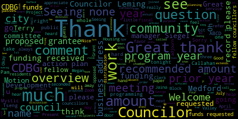
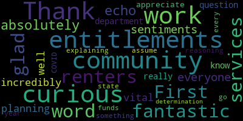
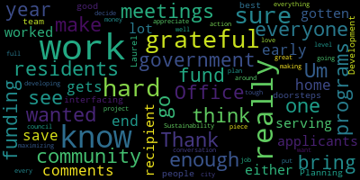

[Collins]: There will be a Medford City Council committee of the whole April 16 2025 this meeting will take place at 6pm in the city council chamber second floor, Medford City Hall, 85 George P has to drive Medford ma and via so Mr. Clerk, please call the role.
[Hurtubise]: Council Callahan. Councilors are always absent, Councilor Leming Councilor Scarpelli has informed us he's going to be late, Councilor Tseng. President Bears is also going to be logging in late, I believe. And then Vice President Collins.
[Collins]: Present. Four present, three absent. The meeting is called to order. The action discussion item for this committee of the whole is paper 25-060 Community Development Block Grant, CDBG action plan for fiscal year 2026. We are joined by manager Siegel. Thank you so much for being here and funding recipients. So the purpose of this meeting is to discuss the city's Community Development Block Grant annual action plan for community development and planning. The action plan contains the proposed use of CDBG funds for the program year, which extends from July 1st, 2025 through July 30th, 2026. CDBG is a program of the U.S. Department of Housing and Urban Development that began in 1974 and fiscal year 26 will be the city of Medford's program year 51 of CDBG funding. That's exciting. I love a prime number. I'll turn it over to you, Manager Siegel, unless there are any preliminary comments from my fellow councilors. Seeing none, please take it away.
[Laurel Siegel]: Great, thank you so much. I'm Laurel Siegel. I am the CDBG manager for the city of Medford. We're actually, we have three plans before us. We are a CDBG entitlement community, which means that we receive direct funding from the Department of Housing and Urban Development every year. And every five years we're required to create what's called a comprehensive plan, which is a plan that establishes our goals for utilizing CDBG funding over the next five years. Every year we also have an annual action plan that is more specific in terms of the projects and activities and the amounts of money that we plan to spend within the coming year. And also, we have recently updated our citizen participation plan. That is the document that provides the guidelines for how we engage with public public engagement is very important part of the CDBG process. public comment periods and legal notice periods and ways that the public can be participating in the process. Um all of these documents are available. We've created a new CDBG page on the city's website. So all of the documents are available for review at Medford MA dot org slash CDBG. Um and all of these documents will be open for public comment until May 12th of this year. So just to give a little bit of an overview here, we do not yet know the amount of our funding for next year. We have been notified, our plans are typically required to be submitted to HUD for review and approval by May 15th. We've been told that we'd be notified of the amount of our funding by May 15th. So there's possibility there may be a delay they'll allow for an extension in that case. So all the figures that you see in these plans are based on an estimate, based on our current year's funding, which is a little bit over 1.384 million. So they're estimated figures and we have a mechanism in the documents for adjusting the figures up and down based on whatever the final amount may be. So within the annual action plan, We are allowed to commit up to 20% of our funding towards administrative costs that includes staffing in the coming year we're proposing that pays my salary it also pays for our housing planner, and for a person of our economic development planner. We are also allowed to expend up to 20% on public services that the broad range of services and that's gonna be the bulk of this meeting, having our proposed grantees discuss the type of services that they provide for our residents, and the rest goes into what are called projects. We have several projects slated. Continuing, we started this year a pilot of our housing rehab loan program that enables us to provide up to $25,000 per home to our low and moderate income residents to make critical improvements to allow them to stay in their home, things like roof replacement, heating systems, other replacements. We're also continuing our economic development programs. We have a new vacant storefront grant program that encourages businesses to relocate to identify vacant storefronts and we provide a financial incentive coupled with a tax incentive from the state. We're also about to launch right now our first round of an incubator pop up for micro enterprises those are small businesses with fiber cure. employees and that will be in Medford Square. It's an opportunity to help lift a new retail business and then hopefully launch them and create new retail around our city. Our plan is to do a second round of that next year as well as having a technical assistance program for micro enterprises to help them and establish their businesses. infrastructure improvements. Um and then last, the largest chunk of the money will go generally goes to infrastructure improvements and that will be going to ADA sidewalk and roadway improvements, widening sidewalks, adding ramps, and curb cuts, and other requirements to make our If there are any questions, please stop me. Otherwise, I'll keep going. And so this evening, what we have done is we have invited our proposed grantees for public services to join us and present to you a very brief description of the program that they are planning to utilize our CDBG funding for. and I have provided you with a table, you know, if you want me to go through any detail I can of the amounts that they've requested, amounts that they've previously received funding, with the exception of one group that's here tonight, all of them have been receiving CDBG funding in prior years, and also the recommended amount of their funding is in the table that I provided. So the first group on the list, I'll just go through them alphabetically, is Action for Boston Community Development, also known as ABCD, and we do have a couple of folks in the audience from them, if you want to come up and join me.
[Collins]: Great, thank you. So this is the proposed grantee ABCD and the amount of CDBG funds requested is $42,497. That's $40,000 of CDBG funding received the prior year and the recommended amount for 2025 is 35,000. Am I reading that correctly, Manager Siegel? Great, thank you. Welcome. Thank you for being here. Please state your names and addresses for the record. A business address is fine. And I think in previous years, the council has found that a two to three minute overview is perfectly sufficient.
[Joshua White]: Absolutely. Thank you. Well, thank you. My name is Joshua White. I am the director of housing and homelessness prevention for ABCD Boston. To my left.
[SPEAKER_12]: Hi, I'm Tondo Dube. I'm the deputy director of housing and homelessness prevention at ABCD.
[Joshua White]: I first want to take this opportunity and thanking the Council for their ongoing partnership with ABCD Boston, and working with us and supporting the residents of Medford as well as the Mystic Valley area in this with this partnership ABCD housing has been fortunate enough to utilize the CBD funding in two ways. Our rental assistance program that provides financial assistance to those residents that may owe any rental arrears or any utility arrears. And then secondly, is our housing counseling services that provides case management, as well as a variety of housing related workshops. I am proud to say that we've introduced a new type of workshop this year, and that is our financial literacy workshops. It focuses primarily on budgeting and money management, understanding your credit score, as well as the benefits of opening up a bank account like a savings or a checking account. The ultimate goal of these financial literacy workshops is to ensure that those that are seeking rental assistance find ways so that they don't find themselves in this situation for years and years to come. That is the ultimate goal. I would also say that the housing counseling workshops ensure that we are providing wraparound services for the other departments within ABCD like our fuel assistance department, our education and employment, and then we are finishing up our free tax preparation services because I know tax day is Friday so we've had a lot of interest in that for residents of the city of Medford. So again we thank the city of Medford for their support and providing the CDBD funding so that we can better support the residents of Medford and again our hope is that we use this funding with the ultimate goal of providing the residents of Medford the skills necessary to become independent and self-sufficient moving forward.
[Collins]: Thank you so much for the overview. Are there any questions for ABCD from my fellow councillors? Councilor Callahan.
[Callahan]: Thank you. First of all, your work is fantastic. I'm so glad that you are here in our community. And I'm just curious how you get the word out to renters about your services.
[Joshua White]: So we do it in a variety of ways. Obviously, social media is a big part, but we have an office in Malden, so we're going to local nonprofits, community organizations, notifying them of the funds available for rental assistance, as well as the housing counseling workshops. A lot of times it is also word of mouth. Someone that may have benefited from the services will notify friends and family of those services. A lot of cold calling to either our Boston office or to our Malden office. But again, I think the big part is the social media through our Facebook, Twitter, so on and so forth.
[Collins]: Thank you. Thank you. Any additional questions from Councilors for ABCD? Seeing none, thank you so much for being here.
[Laurel Siegel]: Next on our list is housing families and we have Jaina Stafford on Zoom.
[Collins]: Great. Thank you. So this is Jaina Stafford from Housing Families. I see the amount of CDBG funds requested as $22,800. Prior year funding was $20,000 and the recommended amount for program year 2025 is 19,000. Jaina, I'm going to click ask to unmute on Zoom. Just your name and business address for the record, please. And thank you for being here. All right, I think you're live.
[U2DHdo_mFTc_SPEAKER_10]: Hi. Thank you so much. I'm so happy to be here. And I wish I could have joined you in person. I don't seem to be able to turn my camera on. It says the host has disabled it. I'm not sure if that's accurate. I can go forward without it, but
[Collins]: I think the clerk may try to work on that, but in the meantime, please feel free to go forward. Sorry.
[U2DHdo_mFTc_SPEAKER_10]: Okay. Oh, that's okay. So again, thank you so much for having me. I wanted to be there in person, but I had some extra family obligations this week, so I couldn't make it. So I am Jaina Stafford. Oh, it looks like maybe I can start my video now. Oh, yay. Okay. Hello again. I'm the Director of our Homelessness Prevention and Legal Services work at Housing Families. Our business address is 919 Eastern Ave in Malden. And we recently rebranded our name for our department. So we're now Legal Aid for Wellbeing and Stability, which has the nice attribute of our acronym is LAWS. But we're doing the same homelessness prevention and legal services work. We just hope that our name is a little bit easier for people to say. So we're kind of rolling that out slowly. So I'm just telling everyone as I'm meeting them. We are so appreciative for these funds. We've been receiving them for, for many years and we've continued to do our work in the community. Our program started in 1991 and we're still the only legal services provider located in the Tri-Cities. And so we have a model that is a little bit different from other providers. We couple homelessness prevention financial assistance when it's available and then also legal services and we found that that's the best way to impact homelessness prevention and to keep people's tenancy stabilized part of our work is also if we cannot do that at that point, or we meet people later, is eviction defense. So we do a lot of that too, all with the mission of keeping people housed. Housing families as a bigger entity has a lot of other programs, and that is useful for some of our clients too, because we are able to refer within housing families. I'll just give a small amount of information. So we have our leasing program, we have permanent supportive housing, They have family shelter, individual shelter, clinical programs, which provide mental health supports. We have children programming, tutoring, and we also have our resource hub. For the work that we do for this program, we requested, I believe it was just over 22,000 for this coming year. We would serve 175 individuals in the Medford area. and we provide information, referrals, brief advice, advocacy, and representation primarily relating to eviction defense and housing law. By the end of the fourth quarter of our last, I'm sorry, did I speak over someone? No, okay. I thought I heard somebody say something, sorry. By the end of the fourth quarter of our last full year, we had exceeded our goal. We served 207 Medford residents and our goal was set at 155. So there's lots of need in the community and we're happy to help fill that with our programs and then of course with our other agencies that are here tonight. Great. That's all I have, and I'm happy to take any questions or answer anything that I can.
[Collins]: That's great. Thank you so much. I see Councilor Leming has a question. Sure.
[Leming]: No, no, no question. I just would like to express my own appreciation for your organization, for your work particularly in helping us to establish the pilot program for veteran renters, um, as well as, uh, you know, personally working with, uh, some residents in Menford who were working with, uh, who were experiencing housing instability and needed the, uh, needed the mediation support when they were, uh, moving apartments to prevent them from being homeless. I understand that in these cases, the, uh, need is always greater than the capacity to serve the need, but I just would like to express my appreciation for your organization and organizations like yours. I do wish that we could provide more funding to in the future so that you can continue the work you do. Thank you.
[U2DHdo_mFTc_SPEAKER_10]: Thank you so much. I appreciate that.
[Collins]: Thank you, Councilor Leming. Seeing no other comments from councillors, thank you so much for being here. Jayna, we really appreciate it and thank you for your work.
[U2DHdo_mFTc_SPEAKER_10]: Thank you so much.
[Laurel Siegel]: All right, next on our list is the Medford Council on Aging and we have Pam Kelly on Zoom for us.
[Collins]: Great, thank you for being here, Pam, and I see the amount of CDBG funds requested at $29,717.50, amount received in the prior year, $27,000, and the recommended amount for program year 2025, $24,000. Where'd you go, Pam? Oh, there you are. Good evening, everybody. I'm sorry, I'm just trying to fix my camera. Okay, there we go.
[SPEAKER_04]: crazy. Hopefully that's better. Okay. My name is Pamela Kelly. I'm the director at the Medford Council on Aging Senior Center, located at 101 Riverside Ave, Medford, just diagonally behind City Hall. We've been there since, the building's been there since 1981. I've been with the senior center since 2008 actually. Um, we're very happy to have the CDBG grant. Um, we have four different areas that we received the funding that is dispersed to. One is to assist our social worker with her hours. Um, she is only part time and, um, the need for a social worker in the city is quite demanding. The city right now has nearly 13,000 seniors who are aged 60 years of age and older. So not that she sees all of them, but the demand each year is becoming more and more. And so that extra funding helps to keep her hours at the 25 hours we're hoping to increase, but we'll have to see what the other budgets that I do get. Also, we have a home maintenance program, and we have a gentleman that works part-time to go to people's homes who may need assistance with changing the batteries in their smoke detectors, their CO2 detectors, changing light bulbs that are in ceiling fixtures, and anything that's going to cause harm. We don't want them going up on ladders or chairs. So we have that free service to the seniors that live in Medford. It's used quite often. For example, in the summertime, putting those heavy air conditioning windows in the windows and then taking them out in the fall is one of the big things that we have. during the summer and the fall season. Also, we have a Mystic Valley Elder Services Title III match that is used with this funding. Mystic Valley Elder Services is part of the ASAP, the local ASAP, that assists all of the Medford senior residents, whether it's for in-home care, Meals on Wheels, many different trip information services, And we help subsidize that funds, each year, and it's matched through another formula grant that I receive. And then the fourth area is our recreational transportation. Many of the older adults they do not drive any longer. and they don't get to go out and socialize in a fun atmosphere. So we have day trips that will take them out on motor coaches or our van to, for example, tomorrow we have a trip going to Providence, Little Italy, and we're able to subsidize the rate to bring it down some so that people can afford it, make it more affordable and a fun way to have a great excursion out. We usually average about 10 trips a year, so that funding helps many seniors in Medford get out and about and see different places. I want to thank the council for giving us this opportunity tonight. And of course, if you have any questions, I'm available.
[Collins]: Great. Thank you so much for being with us, and thank you for your hard work all year round. Thank you. Are there any questions? I see Councilor Leming.
[Leming]: This is just another shout of appreciation for you personally. You've been a wonderful partner to this Council, especially in getting the word out about different municipal happenings to the elderly population method as well as providing just a really great social center for a lot of seniors in the city. You're also just like a very nice person generally, which I appreciate as well. Once again, I do wish that we were able to give more funding to these programs. Having a social worker to support the senior residents in our city is definitely something that I do wish we had more of. But with funding coming in from the federal government, it's another story. No, no, no, no questions about this. But I just like to just like to thank you.
[SPEAKER_04]: Thank you, Councilor. I appreciate that. Great.
[Collins]: Thank you, Councilor Leming. And thank you, Pam. Seeing no other comments. Let's go along to the next proposed grantee.
[Laurel Siegel]: Sure. The next grantee is Medford Public Schools and their after school program and we have Megan Fidler-Carey on Zoom.
[Collins]: Great. Oh, you're right in front of my face. There we go. Thanks for being here, Megan. And for the Medford Public Schools, we have the amount requested, 10,000. Amount of CDBG funding received in the prior year, 9,107. And the recommended amount for program year 2025, 8,303. Please take it away. Thank you for being here.
[Megan Fidler-Carey]: Hi, all. Thank you so much. It's nice to see everybody. Thank you for granting this to us for years now at this point, it makes a big difference. My name is Megan Fidler-Carey. I am the Director of Family and Community Engagement for Medford Public Schools, which is located at 489 Winthrop Street. I, we use this, so this program that we are asking that we've asked for funds for is the tuition assistance program for the Medford afterschool programs. Medford afterschool is a, it's a revolving account. It's a tuition supported program for child care, essentially from dismissal of the elementary schools until six o'clock. It operates in all four schools. As we know, many families have trouble with affording childcare. And it's very binding. If they can't work, they can't afford childcare. And if they can't afford childcare, then they can't work. So this tuition assistance program is essential, and it's been a huge help to us. The Medford Public Schools also supports the tuition assistance program internally, but this really takes a big chunk for us. It's very appreciated. We are working on expanding our afterschool offerings because we know, I feel like everybody that's got up in front of you today has said demand outpaces capacity in all of these services that we provide. But for us specifically, we know that families are being asked to go back to work where they could work from home. That's not an option as often anymore. So we're really trying to expand as much as we can. So every dollar helps. So we really appreciate this.
[Collins]: Great, thank you so much for your vital work in our community. Are there any questions or comments for Megan from members of the council. Seeing none, thank you so much for your overview and yes I think that all Councilors can attest from what we hear from the community for, I mean, year after year. This is meeting a an ever rising demand in the community. Thank you for your work.
[Laurel Siegel]: All right, next on our list is Mystic Valley Elder Services, and we have a couple of representatives in the room with us.
[Collins]: Great, so Mystic Valley Elder Services, I see the amount of CBBG funding requested at $10,968. I see that you did not apply last year, perhaps you're a first-time applicant, and the recommended amount is $9,000. Welcome, name and business address for the record, please, and thank you for being here to give us an overview today.
[SPEAKER_05]: Absolutely. Good evening. My name is Carla Madute. I'm the Director of Nutrition at Mystic Valley Elder Services. We're located at 300 Commercial Street, Malden.
[SPEAKER_11]: And I am Brian Berg, Nutrition's Operations Manager at Mystic Valley Elder Services. We're at 300 Commercial Street, Malden.
[SPEAKER_05]: So we wanted to first thank the Council for their support in past years to Mystic Valley as well, as well as the Nutrition Department. We work very closely with Pam Kelly at Medford COA, who we were thrilled to see on camera. What our goal is for this coming year is to ask for this fund to be able to provide shelf-stable emergency meals to the 405 consumers we have in the city of Medford, as well as to be able to provide our community partners in Medford with shelf-stable meals. In the time during COVID our ability to have shelf stable meals for our consumers in the event of an emergency, whether that be a public health emergency as we faced or a snowstorm emergency, allowed us to provide a peace of mind and stability and food security in a time where There was nothing but concern and panic and we really do everything that we can to provide adequate nutritious meals for our consumers but our program as well as all the programs across the country are facing funding shortfall. This coming year we are about $178,000 short of our budget, and we do not want to compromise the care that we provide our consumers as many programs are facing currently. We are at a time where food insecurity and need is at an all-time high, but resources continue to diminish. So what we are asking for is to be able to provide the residents of Manfred with these shelf-stable meals. We would send them out during the start of the winter season to ensure if we ever had a closing, a storm, or again, like I said, any type of an emergency, that they would have adequate food until we were able to reach them again. But we want to thank you for your time tonight and for the opportunity.
[Collins]: Thank you. Thank you so much for your work. Any questions on this programming or comments from my fellow councillors? Seeing none, thank you so much for your overview and thank you for your impactful work.
[SPEAKER_05]: Thank you for your time. Thank you. Thank you.
[Laurel Siegel]: All right. Next on our list is Mystic Valley YMCA and their Mystic Community Market Program and we have here
[Collins]: Great, thank you. So for the Mystic Valley YMCA and Mystic Community Market, I see amounts requested, 12,000. Amount of funding received in the prior year, 12,000. And recommended for program year 2025, 10,000. Welcome, thank you for being here. Name and business address for the record, please. And thanks for giving us an overview of what you're working on.
[SPEAKER_14]: So thank you for having us. My name is Debbie Emerald I'm the president and CEO of the Mystic Valley YMCA, our main offices at 99 Dartmouth Street in Malden. However, we run the mystic community market. at 291 Mystic Ave in Medford. And we also oversee the Mystic, Mystic, I'm going to say that Medford Youth Center over at 30 Forest. So, and we also oversee actually the Willis-Epp Community Center over at Willis-Epp. So we oversee those three programs in Medford. So we consider part of our home here in Medford. And that's why we changed our name several years ago from Aldenwine State to be more representative of where we actually live. So I want to thank you for the funding. I think few people know this, but in Medford, there's still a hunger gap. We thought we had closed it a few years ago. But when the Greater Boston Food Bank went from using kind of United States data down to more county based data, they found that the hunger gap, in fact, was not closed. And right now we're facing about a 49% hunger gap. And there's about there's hunger for about 5270 households in Medford. So that's about 40% of the households in Medford have hunger. However, we've been able to provide a lot of that and there's only, we're only about, it's going to sound like a lot but it's about 762,000 meals short, a little bit over that so there's still that 41% meal gap. All of us together are providing about 56, 56% of the need that's out there. I would say that for the Y, we're doing three different things. We have our food rescue program, summer meals, and the markets. And they kind of work together. The food rescue programs, we pick up weekly, sometimes twice a week at Aldi's in Medford. That's twice a week. Target, once a week. Wegman, although that's going to twice a week. Wegman's, twice a week. And Stop and Shop in Medford. Oh, and we just added Crumbles, which that's a good day when we get Crumbles. Pretty impressive. Bianca's just called. When they have overstock, they're going to start calling us too so we can, they want to get some fresh meat out to people, especially during the summer. So that's one aspect of what we do. And even if we have leftover meals during the summer, because we provide hot meals, we just got a blast chiller, so that even if Tufts has leftover food for meals, we'll be able to blast chill it soon and get frozen meals out to people. Food Link also comes to us so that we can provide fresh food to people from places like Whole Foods. We also do the summer meals for Medford, so about 5,000 summer meals are provided to children in parks, and hopefully we'll increase that this year. We're hoping to add a summer job component so that we're going to start now, trying to use the term, well, we're hopeful to get the Attorney General's grant. They announced it late in the year, but we're hoping to do that. And finally, our food market, which is where this money is used each year. And we do a few different things with the market, as the community have. Every other week, we go to the senior center, and we bring groceries to about 70 seniors, the seniors themselves pack the grocery bags, as we just bring boxes of food they pack them and distribute to about 70 seniors. walk in court in the federal properties, even with construction. We still bring groceries to about 37 at each property so about 74 seniors receive food from home delivery. And there's five additional homebound seniors that still need food delivery. And as social workers at City Hall identify them, we add and take off people depending on need. And then additionally so far, we have seen at the market. 3,927 Medford residents that were weekly or they can come up to weekly. But people come in on and off for Medford. So that's how many we've seen so far. And we also work with the Food Justice Council has reformed. So they're Medford residents who lived experience that's helping us gather some information, trying to see like how can we identify the additional people that need food, and how can we get it to them. So we're looking into, they're doing some research and trying to spread out what we can do.
[Collins]: So we thank you very much for your help. Great, thank you so much for that overview. And it's always striking to hear about just how many distribution channels you have through our community. And also apart from the distribution itself, I think it's so meaningful to have the kind of statistics and bird's eye view of the problem of food insecurity in our community that you are able to help us apprehend. So thank you for that. Are there any questions or comments from the council for Debbie? Seeing none, thank you so much for being here. Thank you for your work.
[Laurel Siegel]: Thank you. Our next agency is SCM Community Transportation, and we have John here in the room with us. Great.
[Collins]: Welcome. I see the amount requested at $94,500, amount of funding received in the prior year, $90,000, and recommended amount for program year 2025 at $75,000. Nice to see you again. Welcome back. Name and business address for the record, please.
[SPEAKER_13]: Good evening, folks. My name is John Keegan. I'm the executive director at SCM Transportation, aka door-to-door. We provide transportation primarily to seniors and individuals with disabilities who can't use public transportation. We do that in three main areas, medical, transportation, appointments, and anything else in that category. We also take people shopping to various to various shopping centers. We do that by neighborhood. One week, we'll be going to Market Basket. One week, we'll be going to stop and shop from different neighborhoods in the city. And we also provide a fair amount of transportation to the Community Family Adult Day Health Program. So all of this, we believe really allows seniors and folks with disabilities to stay engaged in the cities and the city, usually once or twice a month I'll manage to work my way into driving. for some reason, haven't been able to work my way out of that. And, but it's actually great. I get to meet people. I usually tell them who I am and I get to ask them what they think of the service. I do occasionally get a few complaints about timeliness, but mostly they say they are not sure what they would do without the service. So I take that as a good pat on the back for my crew and This year we're projected to provide among those three services approximately 8,000 rides. So there's a fair amount. We've been a partner with Medford for 44 years. The M in SCM is Medford. A slight gold halo on some of the clouds of late has been I've been working with Laura on a small transportation committee and coincidentally through mass dot we received an innovation grant and. part of the goal was to sort of spread what we could do around. We have a fair amount of involvement with a number of cities, but we've been able to extend a little bit what we're doing sort of first come first serve in Medford by expanding where people can go. We're fairly prescribed in our general contractual obligations, but this has allowed us to, excuse me, allow people to maybe visit someone, go to the hairdresser, something we frequently get requests to. And it's allowed us to at least consider extending some of our earliest hours to eight o'clock, which is also something we get requests, could we get picked up at eight instead of nine? I won't explain the logistics behind the nine o'clock. So that's just started over these last couple months, but I look at that as a little plus, and that is, oh, and did I say we're at 167 Holland Street in Somerville?
[Collins]: Great, thank you so much. Any questions or comments from my fellow councillors for SCM, aka door-to-door? Seeing none, thank you so much for your hard work. Thank you for being here.
[SPEAKER_13]: Thank you for your support over all these years.
[Laurel Siegel]: All right, our next grantee is the Welcome Project, and we have Sarah on Zoom.
[Collins]: Great. So for the Welcome Project, I see amounts requested. Amount of CDBG funding received the prior year, $7,000. And the recommended amount for program year 2025, $7,000. Thank you for being here. Sarah, just name and business address for the record, please.
[SPEAKER_15]: I was going to say I wasn't able to unmute myself. Thank you for pertaining to that. My name is Sarah Kirubi. I'm previously the director of multilingual programs and currently the interim executive director at The Welcome Project. We are located at 530 Mystic Ave in Somerville. I want to thank you all for continuing to support our Medford English for Parents program. We at the welcome project have been around since 1987. We've been running the English for parents program in conjunction with the Somerville public schools for many years, but expanded into Medford to serve Medford parents in spring 2023 and received funding from the city last year for the 1st time. And it was. really invaluable to helping us continue classes in Medford and for Medford parents. So we offer English language instruction at the beginner level to Medford parents, and we have parents from every school in Medford in our program. We focus our English classes and our curriculum on helping immigrant parents navigate the Medford school system, which might be very different than what they're used to in their home countries, help them support their children through their education, both through things like homework help, which an increased level of English fluency helps with, but also in terms of navigating parent-teacher conferences and meeting with a teacher, getting their children extra help, things like that. We also do a lot of resource sharing and leadership development, especially in light of the increased challenges faced by immigrant families in the city. in our region right now. So we have had a great year of our classes. We offer a morning class and an evening class in person and online for flexibility for parents. And we've had many students who have stayed within our program and many who have also moved on to higher level classes within the Welcome Project's other English language program considering their level had changed throughout the course of the class. So that's about it. I just want to say thank you as well, again, for continuing to support our program in the coming year.
[Collins]: Great. Thank you so much for the overview. Thank you so much for your work. Any questions or comments from my fellow Councilors for the Welcome Project? Seeing none, just tacit support. Thank you so much for being here.
[Laurel Siegel]: All right. And our final applicant is West Medford Community Center, and we have Terry Carter online.
[Collins]: Great. Thanks for being here, Terry. So for our final proposed grantee, West Medford Community Center, the amount of CDBG funds requested, $21,000. CDBG funding received the prior year, $18,000, and the recommended amount for program year 2025. 12,000. Terry, nice to see you. Name and business address for the record please.
[Carter]: Terry E. Cotter and I'm at the West Manfred Community Center at 111 Arlington Street. Obviously I want to thank the council for its funding support. I do want to say that in the 13 plus years that I've been employed by the community center and the capacities of director of the Elder Services Project. Our chief aim has been to provide a neighborhood-driven haven for gathering, socializing, and combating the impacts of isolation amongst the seniors in our catchment area while they're primarily living on their own, whether it's in their own homes or apartments or other abodes. We offer in cooperation with a number of partners, principally Mystic Valley Elder Services, a three-day per week program that provides a nutritious lunch, health and wellness check-ins, exercise programming, referrals for various individuals in family needs. and leisure and recreational opportunities. This year, the community center itself celebrates its 90th year of existence and elder services remains a staple of our annual programming with a heavy volunteer component. But the CDBG funding that we receive is principally used to pay a significant portion of my salary, part-time salary. we wouldn't have been able to have the program in force for as long as we have had without this funding. So I do again wanna thank the council and I'm certainly open to any questions that anybody might have about what we do.
[Collins]: Great. Thank you so much for the overview, Terry. Thank you for your work with the WMCC and throughout our community. Any questions on this programming or comments from my fellow Councilors? Oh, thank you. I just asked if there are any questions from my fellow councillors. And I see none. Thank you so much for the overview, Terry.
[Carter]: Thank you, as always.
[Collins]: Great. Are there any further questions or comments from councillors on any of the proposed grantees that we heard from tonight or the general plan for FY 26 for CDBG while we have manager Siegel?
[Laurel Siegel]: If I may, I did wanna add one clarification on the dollar amounts. As you went through the list, it's apparent all of the amounts for this year, the recommended amounts are less than last year. There are two explanations for that. Number one, back in 2020, we received a separate CDBG grant for the coronavirus. And through last year, we had some remaining funds that we were applying to some of these grantees. We no longer have any of those funds available. Also, we have an additional grantee this year, and our scoring team, when we reviewed these applications, we felt that these were all worthy programs. And so we made the decision to offer a little bit less to everybody so that we could fund everybody.
[Collins]: Thank you. That's a very helpful clarification. Okay, I'll go to Councilor Tseng, then Councilor Callahan, then Councilor Loewen.
[Tseng]: Thank you. Um, I just wanted to save my comments until the end to make sure everyone gets to go home early enough. Um, I wanted to thank all the applicants for all their hard work serving our community. A lot of these programs are programs I've either worked with, been a recipient of, or have gotten to know through these meetings and other community meetings. And I see the work that you all are doing for our residents, doing the really hard work of interfacing one-to-one with our residents. And I think that is government at our best when we bring government and bring all of our good work to the people, to the doorsteps. And so I'm very grateful for that. I'm also very grateful to Laurel and our team at the Planning Development Sustainability Office for all the hard work that they've put in, into developing the action plan to decide where the funds are going to make sure everyone has a piece and to have that conversation. I know it's really tough, when you don't have enough money to go around, you know, we'd love to fund every project at the full level. But, you know, I think year to year, your office really does a great job at making sure that we are funding everything that we can, maximizing what we can do with the funding. And I'm very grateful for that. And I want you to know that we on the city council see that work and we really appreciate that work as well.
[Collins]: Thank you. I appreciate that. Thank you, Councilor Saik. Going to Councilor Callahan.
[Callahan]: Thank you. I absolutely echo those sentiments for everyone doing all of this work, which is incredibly vital to our community as well as the planning department. I did have a question about the entitlements and, you know, I really appreciate you explaining that there were some COVID funds, but I'm curious about the reasoning why the entitlements do go down every year. I assume that's something from the state, their determination of
[Laurel Siegel]: Well, so it's from the federal government since we're a direct entitlement community. And the reason why is actually more and more communities have been signing on to participate in CDBG. So even, for example, this year with the continuing resolution of Congress, CDBG as a program has been level funded. But for example, Everett just signed on as an entitlement community. So there's less, there's the same amount of money, but more communities to divide amongst. Thank you so much it's really very interesting to understand.
[Collins]: Thank you. Did you have a hand up counseling. Sorry, I think I turned on the wrong one.
[Leming]: Go ahead. No, my question was related to Councilor Callahan's about the total amount going down and the reasoning for that, although I would like to, I was, I was giving shout outs to the organizations that I have worked with before and I didn't press my button in time to thank Terry Carter for his work with West Medford Community Center so shout out Shout out to you, Terry. Thank you for putting in so much of your effort to helping to run the show down there. And I'd like to also thank the rest of the applicants for applying and for all the work you do in the community. Once again, I would like to see more funding go to non-profits and social services. But as Laurel was just saying, the bucket does seem to be going down every year. So thank you all once again.
[Collins]: Great, thank you for your comments. And yes, I want to echo the praise shared by my fellow Councilors. It is hard work, work that I do not envy having to divvy up limited funds for a whole host of organizations. We're all doing deeply critical and laudable work. And I know that you and your team do that with extreme thoughtfulness. So thank you so much for all of your work in making funding recommendations and reviewing proposed grantees and putting together the one in the five year action plans. It. This is what we don't have a lot of good vibes meetings but personally I always end the CDBG proposed grantee meetings and the action plan meetings feeling a little bit warm and fuzzy because it's great to see how funding that we as a city is going to direct service provision to our residents. And that makes me feel really proud. So I wanna thank all of the proposed grantees for sharing a little bit about your programming with the council tonight. And thank you manager Siegel for organizing and for teeing up this work. So the next step is a public hearing at the April 29th city council meeting, if I have that correct.
[Laurel Siegel]: That is correct. At that meeting, I'll be seeking approval of the council on all three plans. And again, the plans are all available on the city's website for public comment until May 12th on the CDBG page.
[Collins]: Great. Thank you. So residents can find that at MedFrontofMay.org slash CDBG if I have that right. That's one of our few short URL slugs going around. So folks can check them out there for another month, I guess. I'll entertain a motion to refer this paper out of committee to regular session.
[Laurel Siegel]: Great.
[Collins]: I'll motion by Councilor Tseng to refer out of committee, seconded by Councilor Leming. Oh, and I guess we're all here now. All in favor? All opposed? Motion passes. Before we adjourn, is there any public comment on anything that we heard tonight? You may raise your hand on zoom or come up to the podium. Seeing none, I'm shocked. Motion to adjourn by Councilor Leming, seconded by Councilor Tseng. All in favor. All opposed. Motion passes.
|
total time: 10.47 minutes total words: 1647  |
total time: 0.59 minutes total words: 107  |
total time: 3.45 minutes total words: 416 |
total time: 1.57 minutes total words: 260  |
{kind=link}
{kind=link}
{kind=link}
{kind=link}